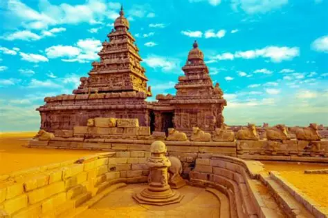
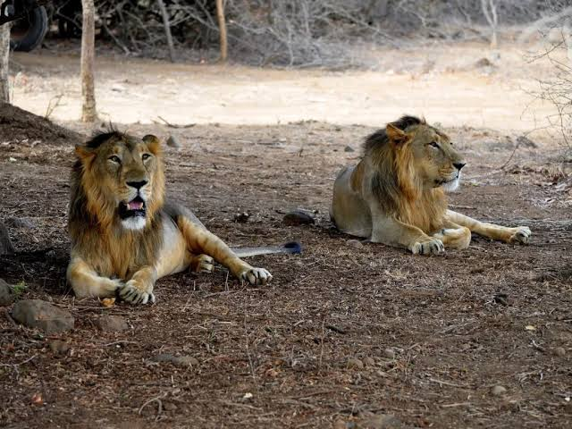
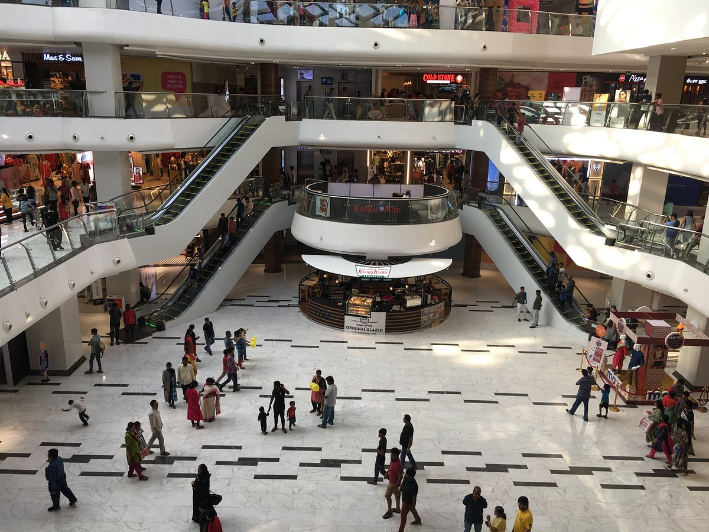
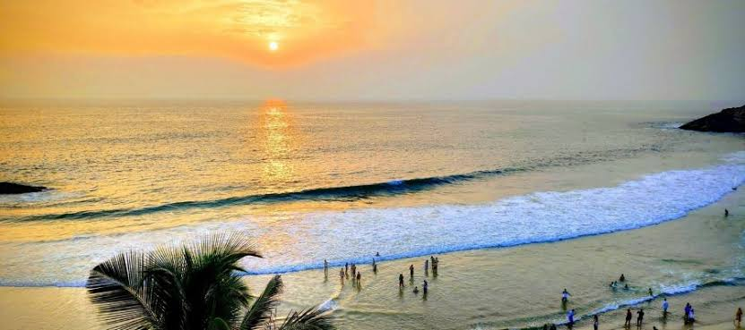
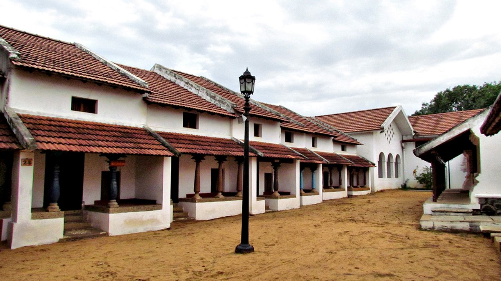
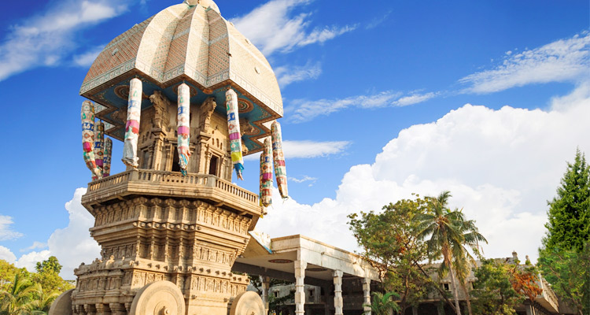

Nearby tourist destinations around Chennai

32 KM from VIT Chennai

8.2 KM from VIT Chennai

10 KM from VIT Chennai

11 KM from VIT Chennai
126 KM from VIT Chennai
58 KM from VIT Chennai
34 KM from VIT Chennai

19 KM from VIT Chennai

36 KM from VIT Chennai